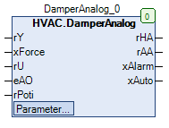

DamperAnalog (FB)¶
FUNCTION_BLOCK DamperAnalog
Short Description¶
Control of a continuous damper actuator with continuous position feedbackTypical application: Continuous recirculation damper of a HVAC system
Portrayal¶

Interfaces¶
Inputs¶
Name Datatype
Range
Init-Value
Functional Description
rY REAL Setpoint value
xForce BOOL FALSE Forced override after Manual override
rU REAL 0.0 Return of the damper position
eAO HVACTYPES.eManNum HVACTYPES.eManNum.Auto, HVACTYPES.eManNum.Man HVACTYPES.eManBin.Auto Operating mode of manual override - Hardware
rPoti REAL 0.0 Manual override value - Hardware
Outputs¶
Name Datatype
Range
Init-Value
Functional Description
rHA REAL Control signal Damper actuator after manual override
rAA REAL Control signal Damper actuator before manual override
xAlarm BOOL collective alarm
xAuto BOOL Collective signal Automatic operation
Setpoints / Parameters¶
Name Datatype
Range
Init-Value
Functional Description
udiControlTime UDINT 10s ... 600s 150s Duration of position monitoring
rControlDiff REAL 7.0 % Maximum permissible deviation between nominal and actual position in %.
xControl BOOL TRUE Enabling position monitoring
xForceOption BOOL FALSE Status of output rHA in state forced override
rManValue REAL 0.0 Manual value
eManModeN eMANNUM eMANNUM.Auto, eMANNUM.Man eMANBIN.Auto Manual override mode
Functional Description¶
Actuator signal Damper actuator before manual override rAA¶
Control signal Damper actuator after manual override rHA¶
rAA eManModeN xForce xForceOption rHA Notes
X eMANNUM.Auto FALSE X rAA Manual override module in automatic mode
X eMANNUM.Man FALSE X rManValue Manual override module in manual mode
X X TRUE FALSE 0.0 Forced override 0.0
X X TRUE TRUE 100.0 Forced override 100.0
xAlarm collective alarm¶
Collective message automatic mode xAuto¶
Forced override xForce¶
Visualization¶
Codesys¶
- InOut:
Scope Name Type Initial Comment Input rY REAL Setpoint value
xForce BOOL FALSE Forced override after Manual override
rU REAL 0 Return of the damper position
eAO eManNum HVACTYPES.eManNum.Auto Operating mode of manual override - Hardware
rPoti REAL 0 Manual override value - Hardware
Output rHA REAL Control signal Damper actuator after manual override
rAA REAL Control signal Damper actuator before manual override
xAlarm BOOL collective alarm
xAuto BOOL Collective signal Automatic operation
Input udiControlTime UDINT 200 Duration of position monitoring
rControlDiff REAL 7 Maximum permissible deviation between nominal and actual position in %.
xControl BOOL TRUE Enabling position monitoring
xForceOption BOOL FALSE Status of output rHA in state forced override
rManValue REAL 0 Manual value
eManModeN eMANNUM eMANNUM.Auto Manual override mode